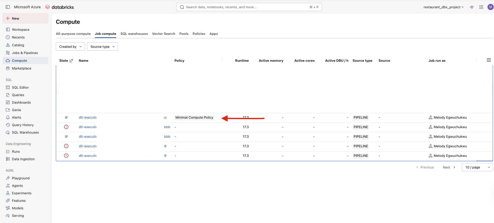
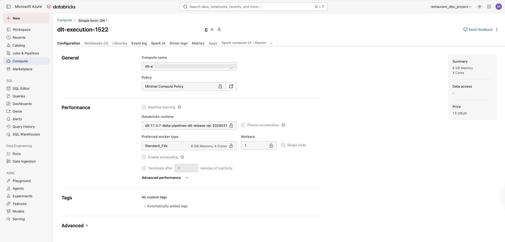

You are building a LakeFlow Connect pipeline. CDC ingestion is humming, the gateway is running, and everything looks fine until you check your Azure cost report.
You realised it is the ingestion gateway quietly autoscaling to five workers in the background, burning compute credits around the clock, whether data is flowing or not. There is no alert. No warning in the UI.
The fix is a compute policy that caps the gateway at one worker. What makes this annoying is that you cannot set it through the Databricks UI — there is no policy field on the gateway configuration screen. You need the Databricks CLI. This post covers the setup end-to-end, including specific errors that tripped me up and how to fix them.
What is an ingestion gateway, and why does the compute matter?
When you use LakeFlow Connect to pull data from Azure SQL into Databricks, two things run simultaneously:
- The ingestion gateway: A continuous pipeline that tracks CDC changes at the source and writes them to a Databricks Unity Catalog volume (the staging area). This runs on classic compute, which means it spins up an actual cluster.
- The ingestion pipeline: Reads from that staging area and writes into your bronze or silver layer. This runs on serverless compute, which is much cheaper.
The gateway is the expensive one. By default, it can autoscale up to five workers. For a project with a small dataset, you need exactly one worker. Attaching a policy enforces that cap.
What you need before you start
- A Databricks workspace (Premium tier — required for Unity Catalog)
- LakeFlow Connect ingestion gateway already created
- Your ingestion gateway stopped — do not try to update a running gateway
- Mac or Linux terminal (Windows users can use WSL or PowerShell with minor adjustments)
Create the compute policy in the Databricks UI
Go to: Compute → Policies → Create Policy
- Name:
minimal_compute_policy - Type: Custom
Paste this JSON into the definition box:
{
"num_workers": {
"type": "fixed",
"value": 1
},
"driver_node_type_id": {
"type": "allowlist",
"values": ["Standard_E4d_v4"]
},
"node_type_id": {
"type": "allowlist",
"values": ["Standard_F4s"]
}
}Save the policy. Click into it and copy the policy ID from the URL or the details panel, you will need it shortly.
Step 2Install the Databricks CLI (Mac)
There are two versions of the Databricks CLI with completely different command structures. The old one — the databricks-cli pip package, v0.18.x — is deprecated, but if you installed it inside a Python virtual environment it is probably still sitting in your $PATH and silently causing issues.
Install the new CLI via Homebrew:
brew tap databricks/tap
brew install databricksVerify the right version is running:
databricks --versionYou should see Databricks CLI v0.2xx. If you see both versions in the output:
Databricks CLI v0.296.0 found at /opt/homebrew/bin/databricks
Your current $PATH prefers running CLI v0.18.0 at /Users/yourname/project/.venv/bin/databrickspip uninstall databricks-cli.Configure the CLI
databricks configureYou will be prompted for two things.
Host — your Databricks workspace URL. Copy it from your browser:
https://adb-123*************.azuredatabricks.netDo not include anything after .net.
Token — generate a personal access token in Databricks: Profile icon (top right) → Settings → Developer → Access Tokens → Generate new token. Name it something like cli-project, set 90 days expiry. Copy it immediately — you cannot see it again after closing the dialog.
Verify the connection works:
databricks workspace list /If you see your workspace folders listed, you are connected. If you get an authentication error, regenerate your token and run databricks configure again.
Stop your ingestion gateway
Go to Databricks UI → Jobs & Pipelines → find your ingestion gateway → click Stop.
Get your pipeline ID and policy ID
List your pipelines:
databricks pipelines listFind your ingestion gateway in the output and copy its pipeline_id. It looks like a UUID: 22****-af58-****-b101-*********.
List your policies:
databricks cluster-policies listFind minimal_compute_policy and copy its policy_id.
Create your settings JSON file
{
"id": "YOUR_GATEWAY_PIPELINE_ID",
"name": "gw_ingestion",
"catalog": "YOUR_CATALOG_NAME",
"schema": "00_landing",
"continuous": true,
"gateway_definition": {
"connection_name": "YOUR_CONNECTION_NAME",
"gateway_storage_catalog": "YOUR_CATALOG_NAME",
"gateway_storage_schema": "00_landing"
},
"clusters": [
{
"policy_id": "YOUR_POLICY_ID"
}
]
}Replace:
YOUR_GATEWAY_PIPELINE_ID— from Step 5YOUR_CATALOG_NAME— check Databricks UI → Catalog ExplorerYOUR_CONNECTION_NAME— the exact name you used when creating the LakeFlow Connect connectionYOUR_POLICY_ID— from Step 5
Create the file inside your project folder:
nano /your/project/path/gateway_policy.jsonRun the update command
databricks pipelines update YOUR_GATEWAY_PIPELINE_ID --json @/your/project/path/gateway_policy.json@ symbol before the file path is not optional. Without it, the CLI tries to parse the file path itself as JSON and throws this error:Error: error decoding JSON at (inline):1:1: invalid character '/' looking for beginning of valueThe
@ tells the CLI to read the content from the file at that path, not treat the path as the JSON value.Verify the policy attached
databricks pipelines get YOUR_GATEWAY_PIPELINE_IDIn the output, look inside the spec section for a clusters array containing your policy_id. If it is there, the policy is attached.
spec section has no clusters field at all, the update did not apply correctly. Check your JSON for typos in field names and run the update again.Start the gateway and confirm
Go back to Databricks UI → Jobs & Pipelines → your ingestion gateway → Start it.
While it is initialising (this takes 2–5 minutes on Azure), go to Compute in the left sidebar. You should see a cluster spinning up with 1 worker (not 5) and minimal_compute_policy attached.


Standard_E4d_v4 or Standard_F4s in your region. Edit the policy and try Standard_D4s_v3 as an alternative.Once the gateway starts and you see one worker spinning up with the policy attached, that is it. You have capped the compute, stopped the credit bleed, and the pipeline behaviour is unchanged.
The two things worth remembering from this setup: you cannot do any of this from the UI, and the gateway must be stopped before you run the update command.
If the gateway gets stuck or the policy does not appear in the spec output, do not restart blindly. Run databricks pipelines get first, confirm what actually applied, then fix and rerun the update before starting again.